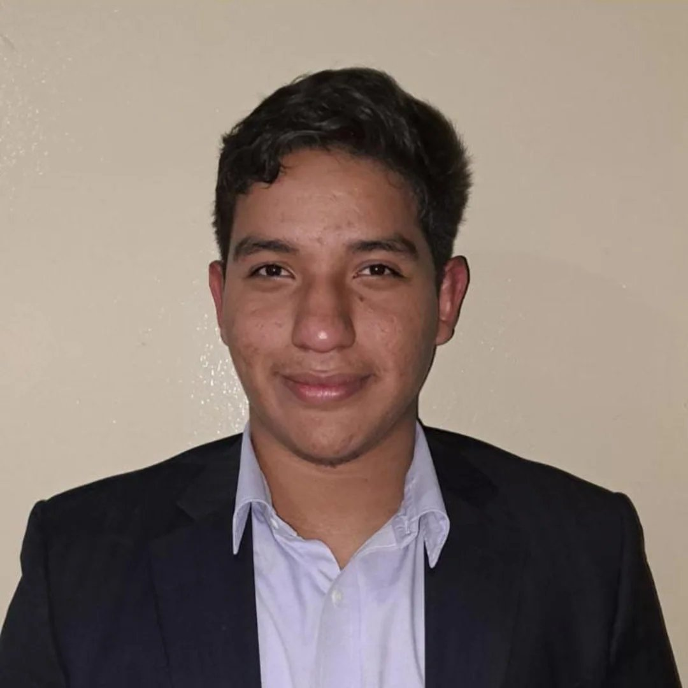

Liderazgo inquisitivo y didáctico que conecta la infraestructura tecnológica y la ciberseguridad con la educación y el impacto social.
Estudiante de Ingeniería en Ciencias de la Computación enfocado en administración de redes, ciberseguridad y desarrollo de sistemas. Me apasiona entender el funcionamiento profundo de la tecnología y descomponer conceptos complejos para hacerlos accesibles.
Creador de contenido en JediZCode y líder de iniciativas voluntarias, me enfoco en resolver problemas de alta exigencia técnica promoviendo el trabajo en equipo, la disciplina y la excelencia.
Trabajo bajo la filosofía de ir siempre más allá de la teoría planteando la pregunta '¿qué pasa si...?', comprometiéndome a dar la milla extra con rigor técnico, empatía y liderazgo directo.
Análisis de vulnerabilidades, arquitectura de redes seguras y administración de servidores Linux. Despliegue de soluciones evaluando límites y casos de borde.
Divulgación técnica en JediZCode. Traducción de arquitecturas y protocolos complejos a explicaciones estructuradas, didácticas y de alta claridad.
Coordinación de proyectos técnicos y comunitarios. Gestión de equipos orientados a la disciplina, la resolución activa de problemas y la responsabilidad social.
Espacio reservado para detallar tu laboratorio de redes Cisco (VPN Site-to-Site, NAT, ACLs) o escaneo de vulnerabilidades con Nessus/Docker en Ubuntu Server.
Espacio reservado para destacar la serie de tutoriales de WSL, fundamentos de terminal, lógica de redes o guías didácticas publicadas en YouTube.
Espacio reservado para añadir tu proyecto de stack web (Node.js, Bootstrap, AJAX) o la arquitectura de procesamiento de datos/reconocimiento.
Abierto a colaboraciones en ciberseguridad, administración de redes, liderazgo comunitario y proyectos educativos.
Conectar en LinkedIn